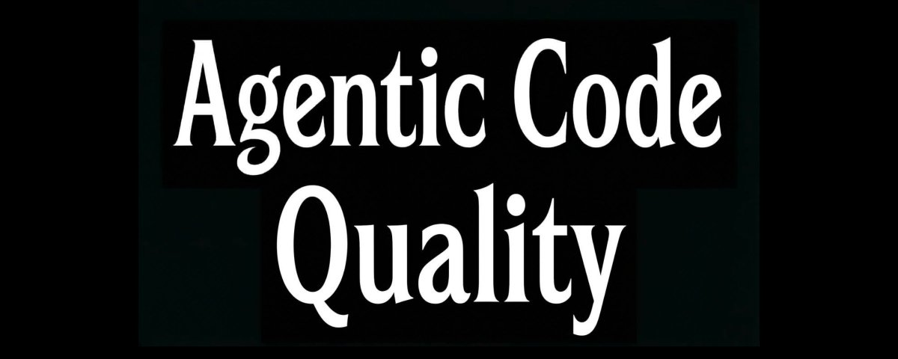
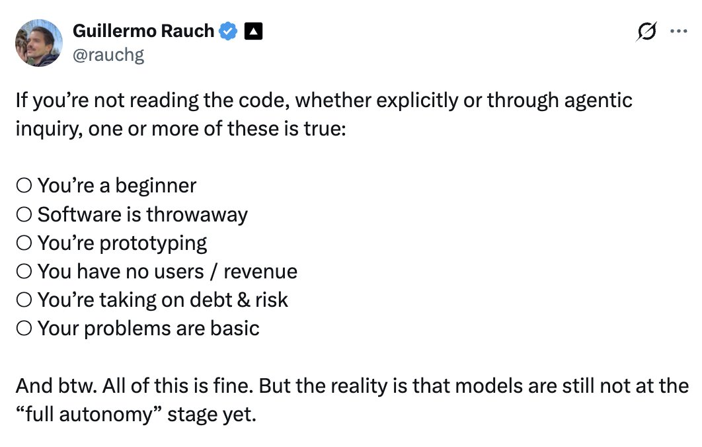
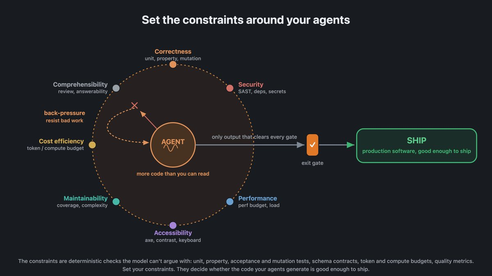
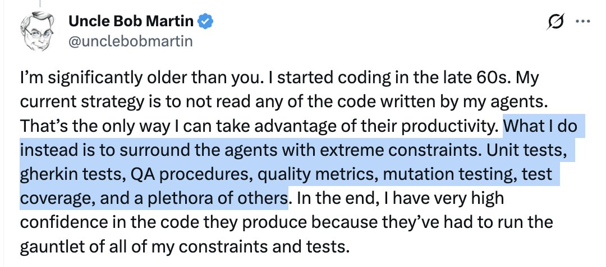
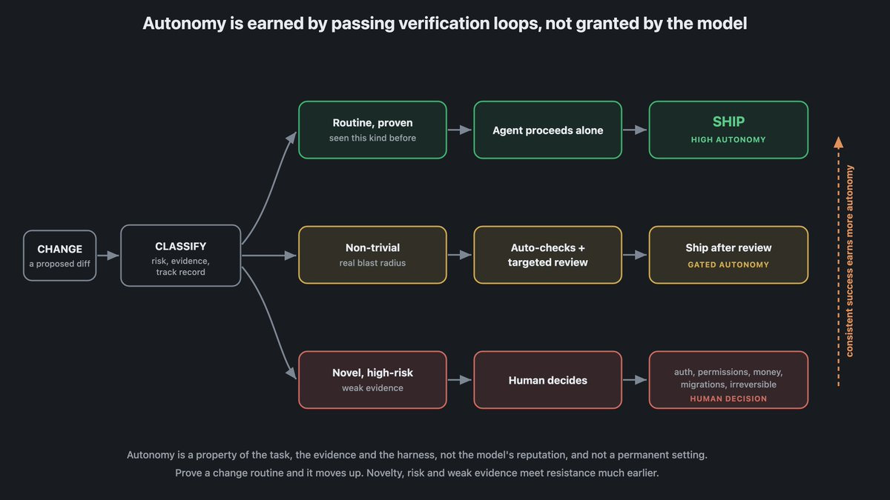
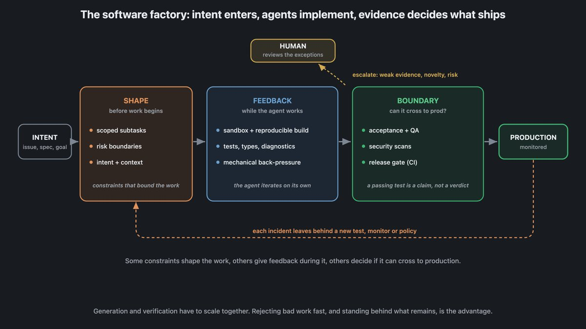
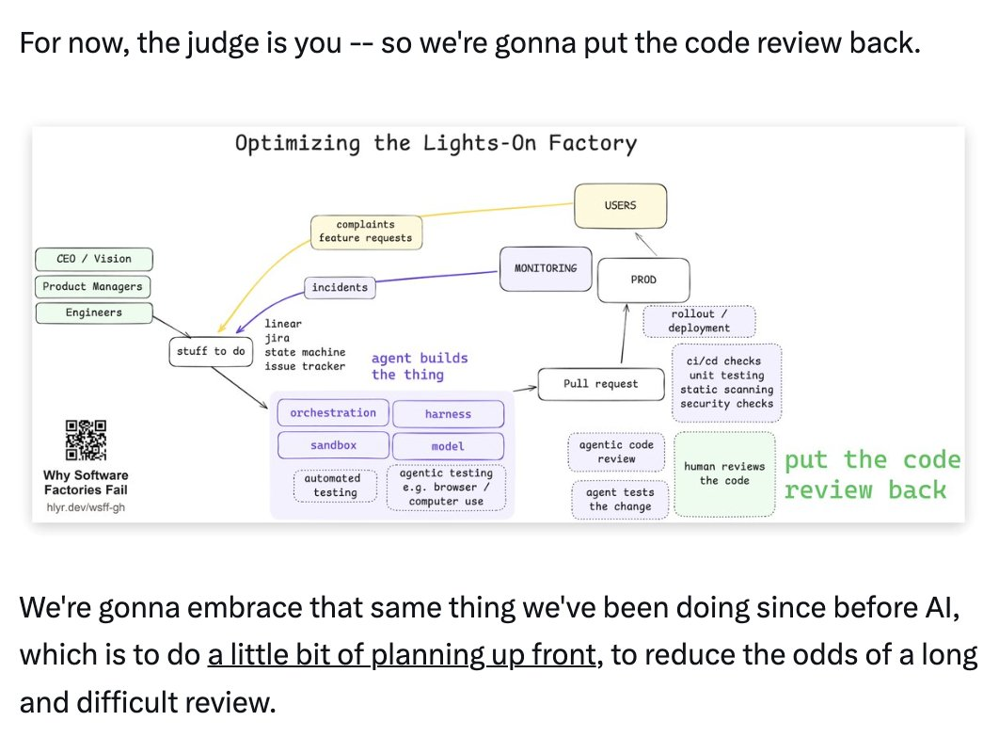

Agent 代码质量
把 review 变成约束 · Agentic Code Quality
软件质量不再是靠人 review，而是靠给 agent 设置的 quality gates / back-pressure——测试、变异测试、圈复杂度、CI 拒绝编译、运行时护栏。这篇 40.5 万浏览的 X 长文,把"代码 review 不再 scale"这件事拆给你看,告诉你软件质量这一关,未来到底由谁来守。

ADDY OSMANI · @ADDYOSMANI · 2026/08/12
作者是谁。Addy Osmani——ChromeDevTools、Agent Skills、Core Web Vitals、TodoMVC 这些开源项目背后的工程负责人,前 Google Chrome 团队、Director of Engineering @ Google Cloud AI/Gemini。X 上 40 万关注,长期关注 developer productivity 和 agent engineering。
这篇文章在讲什么。一句话浓缩:软件质量不再取决于你或你的团队 review 多认真,而是取决于你给 agent 设下了哪些约束。Agent 可以提任何 proposal——你的 constraints 决定它是不是够安全、够正确、够 scoped、够 useful,够不够你和团队发出去。
为什么这篇值得读。Addy 不是在聊「怎么 prompt 一个 agent」,而是在聊「当 agent 每天能产生几十万个 change 的时候,质量这一关到底由谁来守」。他把这件事拆成 6 个章节——从 constraints 的形态、约束的三段位、环境与信任、自主性、back-pressure,到人 review 该往哪挪。读完你会明白,未来软件质量的护栏,不是「再多招几个 senior」,而是「把这套约束写下来,让 agent 替你执行」。
怎么读这篇文章。原文 8 个粗体金句是骨架,每一节底下都有我的口语化翻译。所有 7 张原文配图按原位插入(附图说)。最后一节是 Addy 给的 takeaway——写出你自己的约束计划。
Software quality now depends on the constraints you set around your agents.
— ADDY OSMANI · AGENTIC CODE QUALITY
Software Quality = Constraints
很长的时间里,我们评价代码质量的方式就是 code review——找个人把你写的看一遍,确认它干净、想过、快、好懂、跑得通测试。这套方法在 agent 时代撑不住了:agent 一天能产生几十万到几百万行 change,根本没人读得过来。越来越多质量检查必须发生在 agent 外面的 harness、environment、operating system 里。
Addy 自己现在还是读 code 也 review code,但他非常 intentional——只在一些特定地方允许"不读 code,让约束替我守"是合理的。原文给了一句话定调:
Software quality now depends on the constraints you set around your agents.
—— 软件质量,现在取决于你给 agent 设下了哪些约束。

原文配图 · Addy Osmani (@addyosmani) · 2026/08/12 · Guillermo 的「能否跳过读代码」清单,Addy 评价:每个 yes 其实都在说「这件事 stakes 太低」——一旦 stakes 上去,要么人读 code,要么让约束替你守。
约束说的是:系统"被允许做什么"。具体做法是给 agent 的 proposal 扔测试、扔确定性约束。当 agent 每天产生几十万到几百万 change 时,正是这套约束让"高质量生产代码"这件事能持续跑下去,而不是变成一坨没法收场的 slop。
Addy 把这套约束叫 quality gates,形式可以很多——单元测试、property tests、acceptance tests,还有 mutation testing(对代码生成变异,跑同一套测试,看测试能不能抓住被偷偷塞进来的 bug)。也包括圈复杂度、行长度这些"让代码还能被人读"的硬指标。
What Quality Gates Look Like
约束也在"什么样的 proposal 能从 interpreter 走到 controller 再走到生产"这件事里起决定性作用。一个 proposal 从 agent 走到 production,中间要过多少关——只有过完才让你发,这一关就是 quality gates。

原文配图 · Addy Osmani (@addyosmani) · 2026/08/12 · 流程示意:proposal 从 agent interpreter → controller → production,中间过多少 quality gates。
Addy 的另一句话:这种模式给了我们很多,但也漏掉了不少——漏掉的部分今天值得想清楚。一个明显的问题是自主性:agent 可能在自己意图清晰时干得不错,但信息缺失、或者它要干的事本身定义不清的时候就会卡。这种"定义不清"既包括任务本身,也可能藏在 harness、environment、其他组件的 parameter 化方式里。
人类写不出能上生产的代码的原因,和 agent 干不好的原因,有相当一部分是重叠的——脆弱的环境经不起脚本反复跑、不确定的 build、漏掉的权限、太弱的测试。这件事反过来给我们提了个要求:给 agent 的环境本身要能扛得住——给可信的反馈、让小错成本很低、让成功可以一步步累出来。

原文配图 · Addy Osmani (@addyosmani) · 2026/08/12 · 「Guillermo 看 code,Bob 啥也不看——他们俩描述的都是 gauntlet,差别只在人坐不坐进去」。
Addy 反复强调的另一件事是信任:哪怕是今天最强、最稳的 agent,你也不能直接把意图丢过去就当它已经做对——信任是要一次次挣来的。
The environment we're after is one where an agent can do real work, get feedback it can trust, and fail without doing much damage.
—— 我们要的环境,是一个 agent 能干真活、能拿到可信反馈、犯了错也不会捅出大娄子的环境。
The Three Stages of Constraints
Addy 把约束按作用时机分了三种角色:

原文配图 · Addy Osmani (@addyosmani) · 2026/08/12 · 约束的三段位示意:before / during / after production boundary。
Some constraints shape work before it begins. Others give feedback while the agent is working. Others decide whether its output can cross the production boundary at all.
—— 有的约束在工作开始前就把路画出来;有的约束在 agent 干活的过程中给它反馈;有的约束决定它的产物能不能跨过 production 这条线。
怎么把这套 verification 结构套到系统上,套路不止一种。Addy 给的经验是:你的 constraint 集合要够广,但每一项的职责要够清晰——从 type safety、性能,到后置的 security scanning,各管一摊。团队也可以写自己的约束,比如让 ESLint 强制一套 architecture rule。这些工具大多自带 hook,挂上之后可以让 agent 或人在出问题的时候被叫进来。
Addy 反复强调一条心法:
For now, much of the difference between useful agent output and slop still comes down to the skill of the team operating the loop.
—— 至少在现在,agent 产出是 useful 还是 slop,差别主要还在跑这套 loop 的人的本事。
Environment, Trust, Autonomy
AI 给了我们高吞吐量的代码生成和速度,但反过来,人类想逐行 review 每个 change 也变得更难。Addy 的应对是:对人的注意力去向要 intentional。在一个本身以机器速度运转的系统里塞一个"人必须 review",生产力一定会受影响——人的注意力是稀缺资源,应该主动导给那些最微妙、最需要 judgement 的问题。下游的人,只有在自动护栏真的扛不住的时候,才被拉进来。

原文配图 · Addy Osmani (@addyosmani) · 2026/08/12 · verification loop 流程示意。
正确性(correctness)只是质量的一个维度。还有可维护性、性能、安全、效率、可读性——这些维度,每一个都跟正确性一样分得出多种信号。所以"有多少约束"不重要,"这些约束能不能撑住我们对质量和生产门槛的 bar"才重要。Addy 给了这条很值得抄下来的原话:
Software quality isn't a single metric. Think of it as a collection of signals of varying importance to you and your team.
—— 软件质量不是一个单一指标。把它想成一大堆对你和你的团队权重各不相同的信号。
back-pressure 这件事,工具很多——编译器拒绝非法代码、测试挂掉、安全策略挡住坏习惯、CI 不让 deploy。理想状态是这条 back-pressure 不是只在最后一次性 review 才出现,而是贯穿整条 loop。
Back-Pressure & The Quality Spectrum
Addy 这一节开头给了一条金句:
Constraints and back-pressure let agents catch bad work before its a problem.
—— 约束和背压,让 agent 在烂活儿变成问题之前就把它拦下来。

原文配图 · Addy Osmani (@addyosmani) · 2026/08/12 · Dex Horthy《Why Software Factories Fail》同款 loop 图——绿色框是 Horthy 的论点:当下 human review 应该回到 loop 里,而不是被换掉。
如果约束这套卡不住——因为 change 太多、工具吃不下——我们就会开始排队,被一个"以人速度跑的 verification 系统"拖住。想 scale,verification 这条 loop 里能塞的检查越往前压越好,别等到最后才一次性检。能扩 verification,就能把整条交付系统的速度和吞吐量推上去。扩不动怎么办?Addy 列了三条出路:
- 一、扩 verification 系统本身,给"接 change + push back"腾出更多容量。
- 二、把 agent 产生新 change 的速率降下来,让 verification 跟得上工作量。
- 三、把质量 bar 降低,让 verification 不再像现在这么往死里 push。
从 scale 的角度,这三件事都要准备好用。同时也要意识到:有些方向其实可以"放松约束",换来更多产出。比如给 agent swarm 或自动 software factory 让它们自己去 change,不用每次都等我们 review。
反过来,有些地方也可以反过来——给 agent 更多自由的同时,另一些地方把约束收得更紧。把约束压在我们最在意的地方,就能在不牺牲质量的前提下把吞吐量推上去。在这些决定里,选择很多。最明显的是要在不同质量维度之间做 trade。Addy 反复强调:安全很重要,但我们也在"安全"和"按时交付"之间做 trade——一面是创新导向,一面是质量导向,中间这条 spectrum 上,你必须选你站哪。
这一节的最后一条原则,值得直接抄下来:
Quality is in the constraints that we place around our agents. So as you're thinking about quality for your own apps, take this problem statement and come up with your own constraint-driven plan.
—— 质量就在我们给 agent 设下的约束里。所以当你想自己 app 的质量时,拿这条问题回去,写出你自己的约束计划。
Where Humans Belong · Build Your Plan
前面那一节末尾给了金句和"写出你自己的约束计划"。这一节把这套收尾做实——回答三个问题:人在 loop 里坐哪?这套约束要怎么分层?最后一步,你今晚能做什么?
Human "code review" in the future is going to look very different.
—— 未来人"做 code review"这件事,长得完全不一样。
Addy 把 back-pressure 这一套的核心原则再压缩一遍:背压应该贯穿 pipeline——编译器拒绝非法代码、测试挂掉、安全策略挡住坏习惯、CI 不让 deploy,而不是只在最后一刻才告诉你"你不能 deploy,先修问题"。信号要来得越早越好、走的路径越多越好。这套系统的终极约束,是我们给自己的约束——站得住这套系统怎么搭、怎么跑的决定和动作。但和所有约束一样,我们要想清楚:我们自己的判断要 back-pressure 到什么程度、要 restraint 到什么程度、要把它当成多重的最后一道关。

原文配图 · Addy Osmani (@addyosmani) · 2026/08/12 · 收尾图 · Quality is in the constraints we place around our agents。
Addy 反复强调:约束要 strategic。在哪强约束、在哪松或拿掉约束,要 deliberate。强约束要落在"同时服务于质量和安全"这两件事的地方;如果一条约束两件事都不服务,就别撑它。要随时准备把 bar 抬高或放低。说到底,这套分布在系统各处的约束,才是把软件质量真正落地的牙齿。
最后一句话给你:
Quality is in the constraints that we place around our agents.
—— 质量就在我们给 agent 设下的约束里。
所以当你为自己 app 的质量做打算时,拿这条问题回去:你要给 agent 设下哪些 quality gates?哪些 back-pressure?哪些人是最后一道关?写出来。这套约束写下来,就是你的约束计划。
SOURCES & CREDITS
引用与原文出处
-
ORIGINAL ARTICLE
Agentic Code Quality
作者:Addy Osmani (@addyosmani) · 发布于 2026/08/12 · 405,611 浏览 · 1,032 赞 · 127 转推 · 2,007 收藏 · 36 回复
推文链接:https://x.com/addyosmani/status/2087427868343373919 - AUTHOR · X https://x.com/addyosmani
- AUTHOR · WEBSITE addyosmani.com — Addy Osmani 个人站
- RELATED · AGENT SKILLS github.com/addyosmani/agent-skills — Addy 开源的 agent skills 库(quality gates 的可执行版本)
- RELATED · CORE WEB VITALS web.dev/articles/vitals — Addy 主推的另一套"用 signals 衡量质量"框架
- INTERPRETATION 本文为完整翻译版本,按原文 6 段(金句 1~6 + 收尾金句)的顺序重新组织成 6 章。所有 7 张原文配图按出现位置完整保留(图说附 Addy 原文 caption + 我的中文补充)。原文末尾 Sonar 广告位跳过——不是文章内容。如需引用请以原文为准。
最反直觉的一条——未来软件质量不是 review 出来的,是 constraints 设出来的。今晚能做的:挑一个你团队 review 最多的事,把它写成一条 quality gate。
未来软件质量的护栏,
不是你再多招几个 senior,而是你今天就写下这条 constraint。
— ADDY OSMANI · AGENTIC CODE QUALITY